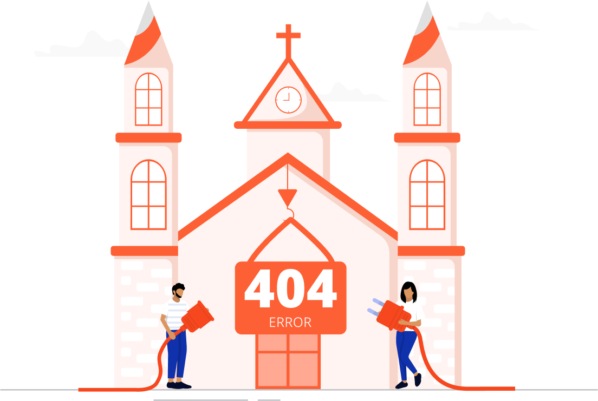

Pular para o conteúdo principal
Página Inicial
História
Pastoral
Eventos
Agenda Litúrgica
Liturgia do Dia
Contato
Ouça agora
Ouça agora
Página Não Encontrada
início
erro 404

Oops!
Página Não Encontrada
A página que você está procurando não existe
Voltar ao Início